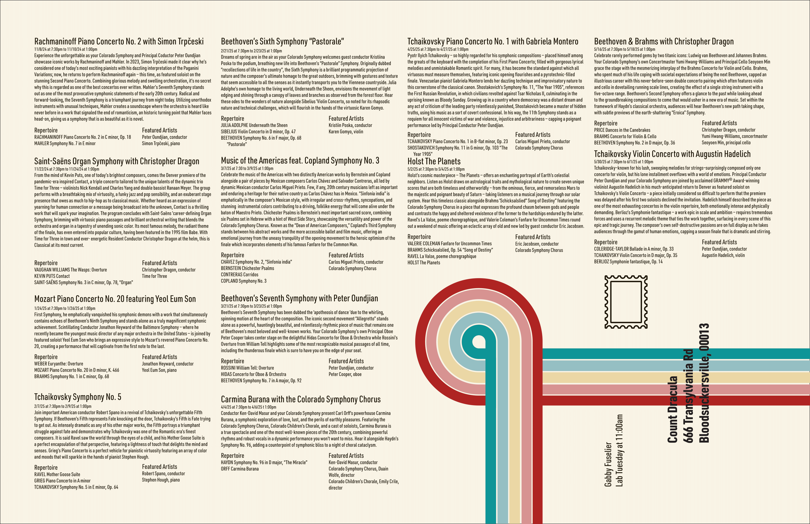
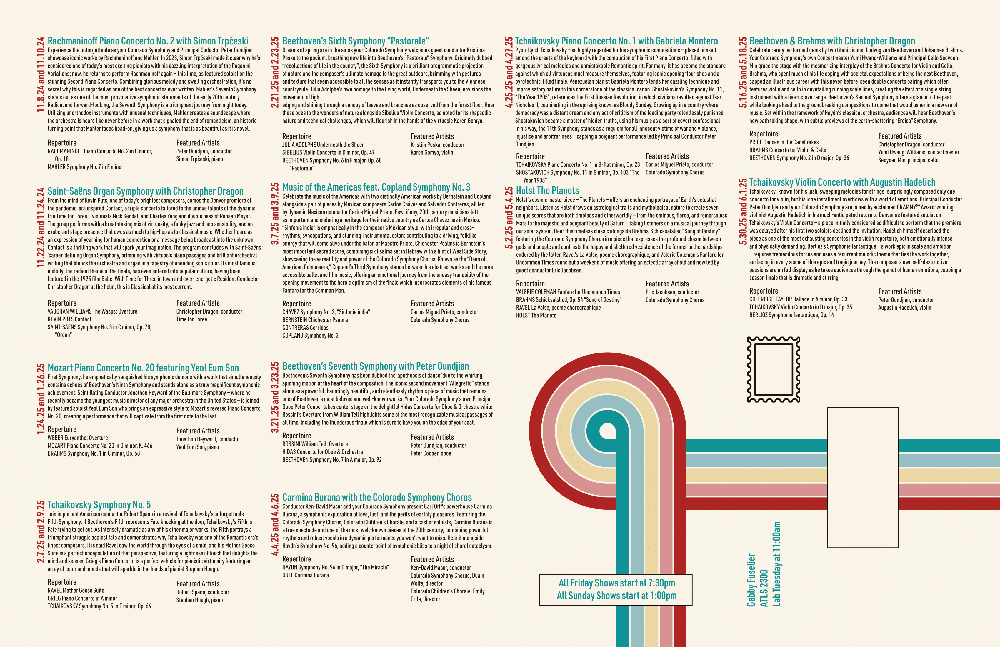

Role: Graphic Designer
Tools: Adobe InDesign, Illustrator
Project Type: Individual Print Design Project
The challenge was to design a tabloid-sized promotional piece for the Colorado Symphony Orchestra that balanced visual impact with dense informational content. The layout needed to function both as an eye-catching poster and as a detailed performance schedule, while also folding cleanly into eighths for mailing.
This project required careful attention to hierarchy, spacing, and grid structure. I developed a layout system that allowed all required information to remain intact without overwhelming the viewer. The final result maintains clarity and visual cohesion while supporting the physical constraints of print production and mailing.
I structured the composition using a four-by-four grid system. One quadrant was intentionally reserved for mailing information and a cohesive visual element, ensuring that no critical content would be lost in fold lines. This decision required precise distribution of performance details across the remaining grid sections.
The orientation and placement of each performance listing were carefully considered to maintain balance across the page. While fitting all required information into the layout was challenging, the grid system ensured clarity and preserved legibility once folded.
The initial design established the core grid structure and typographic direction. At this stage, the focus was on organizing information logically while experimenting with visual emphasis.

Instructor feedback highlighted opportunities to strengthen visual hierarchy and improve readability. Specifically, the time and date needed greater emphasis, and the mailing address required clearer typographic treatment.
In response, I adjusted font weights, increased contrast between headings and body text, and refined spacing throughout the grid. These changes improved scanability and ensured that key information stood out immediately.
The final iteration reflects improved hierarchy and more intentional typographic structure. The schedule information is easier to navigate, and the address area is clearly legible at a glance. The piece maintains visual cohesion while functioning effectively as a foldable promotional mailer.

This project reinforced the importance of hierarchy in print design. Even when all content is required, thoughtful grid systems and typographic adjustments can create clarity without sacrificing information.
I learned how physical constraints directly influence layout decisions. Designing for both visual impact and functional practicality required careful planning, but ultimately resulted in a more intentional and refined final piece.